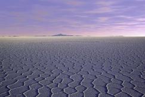
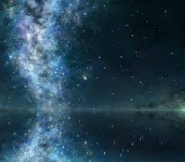
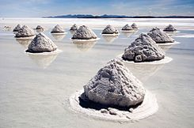

Es el mayor desierto de sal continuo y alto del mundo. Situado a unos 3650m en el suroeste de Bolivia, en la provincia de Daniel Campos, en el departamento de Potosí, dentro de la región altiplánica de la cordillera de los Andes.
Además es la mayor reserva de litio en el mundo con el 50-70% del litio mundial, aunque también cuenta con importantes cantidades de potasio, boro y magnesio.
  En esta tabla indicamos comparamos los datos entre estas dos provincias.
| Localidad | Temperaturas | Humedad |
|---|---|---|
| Uyuni | 9.3ºC | 25.8% |
| Colcha K | 10ºC | 26.2% |
En estos enlaces encontraremos información sobre este tema